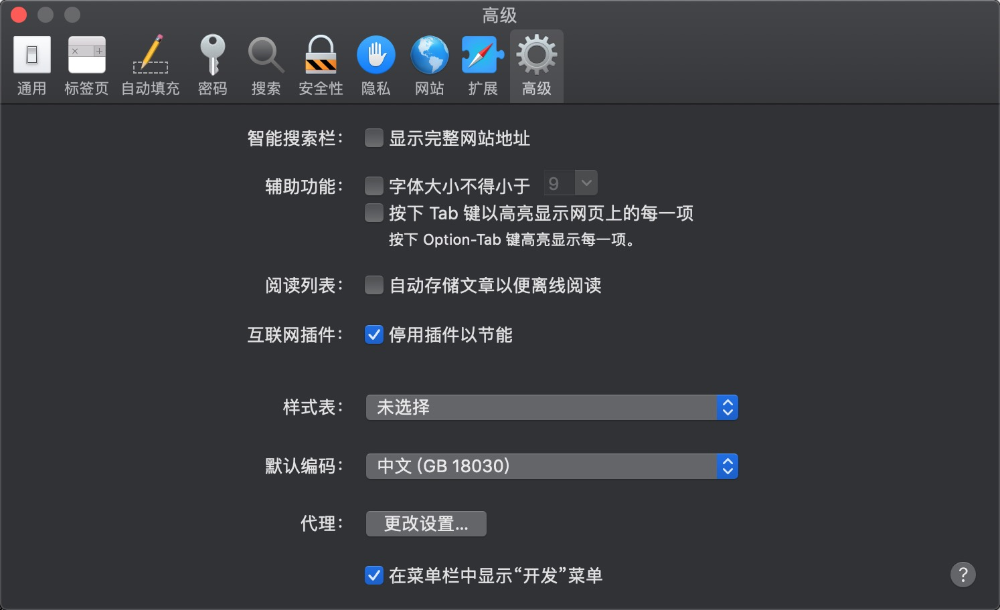

<!DOCTYPE html>


  <html class="light page-post">


<head><meta name="generator" content="Hexo 3.8.0">
  <meta charset="utf-8">
  
  <title>【译】远程调试 iOS Safari | Scarletsky</title>

  <meta name="viewport" content="width=device-width, initial-scale=1, maximum-scale=1">

  
    <meta name="keywords" content="iOS,">
  

  <meta name="description" content="如今在移动设备上测试网站变得越来越重要了，我们会经常发现在移动设备的浏览器上面网站会表现 的和桌面浏览器不一样，因此在开发网站时用真机测试变得非常重要。大多数在桌面电脑的开发服务器都只是在 localhost 中打开一个端口，然后通过 URL http://localhost1234 来访问内容。这种方式在电脑端非常管用，但你不可以把这个 URL 复制到手机端测试。 一种可行（通常都可以）但并不高">
<meta name="keywords" content="iOS">
<meta property="og:type" content="article">
<meta property="og:title" content="【译】远程调试 iOS Safari">
<meta property="og:url" content="http://scarletsky.github.io/2019/01/10/wireless-remote-debugging-with-safari-on-ios/index.html">
<meta property="og:site_name" content="Scarletsky">
<meta property="og:description" content="如今在移动设备上测试网站变得越来越重要了，我们会经常发现在移动设备的浏览器上面网站会表现 的和桌面浏览器不一样，因此在开发网站时用真机测试变得非常重要。大多数在桌面电脑的开发服务器都只是在 localhost 中打开一个端口，然后通过 URL http://localhost1234 来访问内容。这种方式在电脑端非常管用，但你不可以把这个 URL 复制到手机端测试。 一种可行（通常都可以）但并不高">
<meta property="og:locale" content="zh-Hans">
<meta property="og:image" content="http://scarletsky.github.io/2019/01/10/wireless-remote-debugging-with-safari-on-ios/computer-name.jpg">
<meta property="og:image" content="http://scarletsky.github.io/2019/01/10/wireless-remote-debugging-with-safari-on-ios/safari-develop.jpg">
<meta property="og:updated_time" content="2019-01-10T14:38:37.344Z">
<meta name="twitter:card" content="summary">
<meta name="twitter:title" content="【译】远程调试 iOS Safari">
<meta name="twitter:description" content="如今在移动设备上测试网站变得越来越重要了，我们会经常发现在移动设备的浏览器上面网站会表现 的和桌面浏览器不一样，因此在开发网站时用真机测试变得非常重要。大多数在桌面电脑的开发服务器都只是在 localhost 中打开一个端口，然后通过 URL http://localhost1234 来访问内容。这种方式在电脑端非常管用，但你不可以把这个 URL 复制到手机端测试。 一种可行（通常都可以）但并不高">
<meta name="twitter:image" content="http://scarletsky.github.io/2019/01/10/wireless-remote-debugging-with-safari-on-ios/computer-name.jpg">

  

  
    <link rel="icon" href="/favicon.ico">
  

  <link href="/css/styles.css?v=c114cbeddx" rel="stylesheet">


  
    <link rel="stylesheet" href="/css/personal-style.css">
  

  
<!-- Google Analytics -->
<script type="text/javascript">
(function(i,s,o,g,r,a,m){i['GoogleAnalyticsObject']=r;i[r]=i[r]||function(){
(i[r].q=i[r].q||[]).push(arguments)},i[r].l=1*new Date();a=s.createElement(o),
m=s.getElementsByTagName(o)[0];a.async=1;a.src=g;m.parentNode.insertBefore(a,m)
})(window,document,'script','//www.google-analytics.com/analytics.js','ga');

ga('create', 'UA-40690820-1', 'auto');
ga('send', 'pageview');

</script>
<!-- End Google Analytics -->


  

  


  
    <script async src="https://busuanzi.ibruce.info/busuanzi/2.3/busuanzi.pure.mini.js"></script>
    <link rel="stylesheet" href="//cdn.bootcss.com/font-awesome/4.3.0/css/font-awesome.min.css">
  

</head>
</html>
<body>


  
    <span id="toolbox-mobile" class="toolbox-mobile">盒子</span>
  

  <div class="post-header CENTER">
   
  <div class="toolbox">
    <a class="toolbox-entry" href="/">
      <span class="toolbox-entry-text">盒子</span>
      <i class="icon-angle-down"></i>
      <i class="icon-home"></i>
    </a>
    <ul class="list-toolbox">
      
        <li class="item-toolbox">
          <a class="CIRCLE" href="/archives/" rel="noopener noreferrer" target="_self">
            博客
          </a>
        </li>
      
        <li class="item-toolbox">
          <a class="CIRCLE" href="/category/" rel="noopener noreferrer" target="_self">
            分类
          </a>
        </li>
      
        <li class="item-toolbox">
          <a class="CIRCLE" href="/tag/" rel="noopener noreferrer" target="_self">
            标签
          </a>
        </li>
      
        <li class="item-toolbox">
          <a class="CIRCLE" href="/about/" rel="noopener noreferrer" target="_self">
            关于
          </a>
        </li>
      
        <li class="item-toolbox">
          <a class="CIRCLE" href="/atom.xml" rel="noopener noreferrer" target="_blank">
            RSS
          </a>
        </li>
      
        <li class="item-toolbox">
          <a class="CIRCLE" href="/search/" rel="noopener noreferrer" target="_self">
            搜索
          </a>
        </li>
      
    </ul>
  </div>


</div>


  <div id="toc" class="toc-article">
    <strong class="toc-title">文章目录</strong>
    <ol class="toc"><li class="toc-item toc-level-2"><a class="toc-link" href="#在你的移动设备中打开-localhost-port"><span class="toc-text">在你的移动设备中打开 localhost:port</span></a></li><li class="toc-item toc-level-2"><a class="toc-link" href="#远程调试"><span class="toc-text">远程调试</span></a></li><li class="toc-item toc-level-2"><a class="toc-link" href="#远程调试（无数据线）"><span class="toc-text">远程调试（无数据线）</span></a></li><li class="toc-item toc-level-2"><a class="toc-link" href="#译注"><span class="toc-text">译注</span></a></li><li class="toc-item toc-level-2"><a class="toc-link" href="#参考资料"><span class="toc-text">参考资料</span></a></li></ol>
  </div>


<div class="content content-post CENTER">
   <article id="post-wireless-remote-debugging-with-safari-on-ios" class="article article-type-post" itemprop="blogPost">
  <header class="article-header">
    <h1 class="post-title">【译】远程调试 iOS Safari</h1>

    <div class="article-meta">
      <span>
        <i class="icon-calendar"></i>
        <span>2019.01.10</span>
      </span>

      
        <span class="article-author">
          <i class="icon-user"></i>
          <span>Scarletsky</span>
        </span>
      

      


      
        <span>
          <i class="icon-comment"></i>
          <a href="http://scarletsky.github.io/2019/01/10/wireless-remote-debugging-with-safari-on-ios/#disqus_thread"></a>
        </span>
      

      
      <i class="fa fa-eye"></i> 
        <span id="busuanzi_container_page_pv">
           &nbsp热度 <span id="busuanzi_value_page_pv">
           <i class="fa fa-spinner fa-spin"></i></span>℃
        </span>
      
      
    </div>
  </header>

  <div class="article-content">
    
      <p>如今在移动设备上测试网站变得越来越重要了，我们会经常发现在移动设备的浏览器上面网站会表现 的和桌面浏览器不一样，因此在开发网站时用真机测试变得非常重要。<br>大多数在桌面电脑的开发服务器都只是在 <code>localhost</code> 中打开一个端口，然后通过 URL <code>http://localhost1234</code> 来访问内容。这种方式在电脑端非常管用，但你不可以把这个 URL 复制到手机端测试。 一种可行（通常都可以）但并不高明的方式是先查找电脑端当前的 IP 地址，然后移动端通过 <code>http://&lt;ip-address-of-desktop&gt;:&lt;port&gt;</code> 来访问网站。</p>
<p>然而，基于电脑端的 IP 地址来调试是非常烦人的，因为这个地址会经常发生变化。这意味着你不能保存该地址到书签中，而且当 IP 地址发生变化的时候，你将会丢失该域下的 数据，如 <code>cookies</code>, <code>localStorage</code> 等等。 然而，<strong>有一种简单的方式去解决这个问题， 这种方式只需要设置一次，不会受到 IP 地址变化的影响，甚至不需要数据线！</strong> 你只需要一台 Mac 和 Safari 即可。这个方案可以用在 macOS 10.12（Sierra）， 10.13（High Sierra），10.14（Mojave），可能可以用在更老的 macOS 版本中。</p>
<h2 id="在你的移动设备中打开-localhost-port"><a href="#在你的移动设备中打开-localhost-port" class="headerlink" title="在你的移动设备中打开 localhost:port"></a>在你的移动设备中打开 localhost:port</h2><p>先假设你的测试服务器在 <code>localhost</code> 中打开了 8080 端口。在你的电脑端，你当然可以打开 <code>localhost:8080</code> 来访问网网站了。现在我们要让你的移动设备来打开它。实际上，我们不会使用 <code>localhost:&lt;port&gt;</code> 或者 <code>&lt;ip-address&gt;:&lt;port&gt;</code>，因为有一种更好的方式来代替它：<strong>计算机名</strong>。<br>你可以在 <code>系统偏好设置</code> -&gt; <code>共享</code> 中找到你的计算机名(注意，接下来我会用 <code>&lt;computer-name&gt;</code> 来指定计算机名)。<br>接下来你需要至少激活一种在列表中共享服务，激活哪个都没所谓。这可能有点蠢，或者你可以激活打印机共享，因为通常只有你会使用到。</p>
<p></p>
<p>现在确保你的 Mac 和 iOS 设备处在同一网络环境中，然后在你的 iOS 设备中打开 <code>http://&lt;computer-name&gt;.local:8080</code>。现在你的网站就会显示在你的 iOS 设备上了！</p>
<p><strong>你还是打不开网站吗？</strong> 看起来你需要设置你的服务器，用 <code>0.0.0.0</code> 代替 <code>localhost</code> （并且允许从 <code>*.local</code> 建立的链接）。把你的 IP 地址改成 <code>0.0.0.0</code> 会让你的服务器可以从外部访问（在同一 WiFi 内）。</p>
<p>如果你正在使用 <code>webpack-dev-server</code> 的话，你只需要稍微改动一下配置就可以了。默认情况下，它会在 <code>localhost</code> 上创建服务器，并且不会允许外部链接（例如通过手机访问）。所以你需要修改一下 <code>webpack dev server</code> 的配置文件（准确来说就是 <code>host</code> 和 <code>allowedHosts</code> 字段）：</p>
<figure class="highlight plain"><table><tr><td class="code"><pre><span class="line">devServer: &#123;</span><br><span class="line">  host: &apos;0.0.0.0&apos;,</span><br><span class="line">  allowedHosts: [</span><br><span class="line">    &apos;.local&apos;,</span><br><span class="line">  ],</span><br><span class="line">&#125;,</span><br></pre></td></tr></table></figure>
<p>注意我们添加 <code>.local</code> 到 <code>allowedHosts</code> 中，这会让所有 <code>.local</code> 结尾的 host 可以 访问到我们的网站，这样当我们需要共享的时候非常有用。 重启服务器，你的 iOS 设备应该可以正常访问网站了！如果你收到报错信息 <code>invalid host header</code> 的话，那很可能你的计算机名输错了。</p>
<p>实际上同一 WiFi 下的所有 iPhone， iPad，Mac 都可以访问到你开发环境中的网站的，而且 iOS 上的 Firefox 和 Chrome 都可以访问到。然而，你不可以在 Firefox 和 Chrome 中使用远程调试。</p>
<h2 id="远程调试"><a href="#远程调试" class="headerlink" title="远程调试"></a>远程调试</h2><p>现在你的手机和平板电脑都可以访问网站了，你可能通过它们来远程调试。设置起来是非常简单的。打开 Safari 的 <code>偏好设置</code> -&gt; <code>高级</code> 然后启用 <code>在菜单栏中显示“开发”菜单</code>。</p>
<p></p>
<p>在移动端，启用 <code>设置</code> -&gt; <code>Safari 浏览器</code> -&gt; <code>高级</code> -&gt; <code>Web 检查器</code>，然后用数据线连接你的 Mac。用移动端的 Safari 打开网站，然后在 Mac 上的 Safari 选择 <code>开发</code> -&gt; <code>&lt;设备名字&gt;</code> -&gt; <code>&lt;你想调试的 Tab&gt;</code>。如果你是第一次设置的话，那么你需要点击信任设备。</p>
<p>现在所有的设置已经完成了。当你点击 <code>&lt;你想调试的 Tab&gt;</code> 的时候，Mac 上的 Safari 会创建一个调试用的 session，它会允许你在 Mac 的 Safari 中调试 iOS 设备。</p>
<h2 id="远程调试（无数据线）"><a href="#远程调试（无数据线）" class="headerlink" title="远程调试（无数据线）"></a>远程调试（无数据线）</h2><p>其实你不需要用数据线连接电脑也可以远程调试移动端的 Safari 的，但这种情况下你需要在 Mac 上安装 <a href="https://developer.apple.com/safari/technology-preview/" target="_blank" rel="noopener">Safari Technology Preview</a>，因为当前稳定版的 Safari 并不支持无线远程调试。<br>重复上面做的事情，用数据线连接电脑然后打开 iOS 上的 Safari。在 Safari Technology Preview 中，确保你已经启用了 <code>在菜单栏中显示“开发”菜单</code>，然后启用 <code>Develop</code> -&gt; <code>&lt;Your mobile Device Name&gt;</code> -&gt; <code>Connect via Network</code>。现在你可以把数据线拔掉，看看 <code>Develop</code> -&gt; <code>&lt;Your mobile Device Name&gt;</code> 是否还显示在 Safari Technology Preview 中。</p>
<p>然后选择你想调试的 Tab 就可以了。Safari Technology Preview 会在 macOS 中建立一条无线连接到 iOS 设备上，这样你就可以在 Mac 上调试 iPhone 和 iPad 了。看，不需要数据线吧。<br>Happy Testing!</p>
<h2 id="译注"><a href="#译注" class="headerlink" title="译注"></a>译注</h2><p>按照我的经验，用 Safari Technology Preview 来无线调试用起来是非常舒服的，但有个致命缺点就是非常不稳定。经常调试着调试着就搜不到设备了。<br>当出现这种情况的时候，可以试着把Safari Technology Preview 杀掉然后重启，看看能不能找到设备，如果找不到， 就把 iOS 上的 Safari 杀掉再重启，再测试。多试几次通常就能正常调试了。<br>如果还是找不到，那过一段时间（通常是 5 ～ 10 分钟左右）再打开 Safari Technology Preview 试试。<br>实在不行又赶着调试的话，还是乖乖插上数据线调试算了。(然而体验过无线调试之后就回不去有线调试了 XD)。</p>
<p>完。</p>
<h2 id="参考资料"><a href="#参考资料" class="headerlink" title="参考资料"></a>参考资料</h2><p><a href="https://silvantroxler.ch/2018/wireless-remote-debugging-with-safari-on-ios/" target="_blank" rel="noopener">(Wireless) Remote Debugging with Safari on iOS</a></p>

    
  </div>

</article>


   
  <div class="text-center donation">
    <div class="inner-donation">
      <span class="btn-donation">支持一下</span>
      <div class="donation-body">
        <div class="tip text-center">扫一扫，支持 scarletsky</div>
        <ul>
        
          <li class="item">
            
              <span>微信扫一扫</span>
            
            
          </li>
        
          <li class="item">
            
              <span>支付宝扫一扫</span>
            
            
          </li>
        
        </ul>
      </div>
    </div>
  </div>


   
  <div class="box-prev-next clearfix">
    <a class="show pull-left" href="/2017/12/23/write-javascript-document-by-jsdoc/">
        <i class="icon icon-angle-left"></i>
    </a>
    <a class="show pull-right" href="/2019/02/19/webpack-bundling-libraries-with-dynamic-imports/">
        <i class="icon icon-angle-right"></i>
    </a>
  </div>


</div>


  <a id="backTop" class="back-top">
    <i class="icon-angle-up"></i>
  </a>


  <div class="modal" id="modal">
  <span id="cover" class="cover hide"></span>
  <div id="modal-dialog" class="modal-dialog hide-dialog">
    <div class="modal-header">
      <span id="close" class="btn-close">关闭</span>
    </div>
    <hr>
    <div class="modal-body">
      <ul class="list-toolbox">
        
          <li class="item-toolbox">
            <a class="CIRCLE" href="/archives/" rel="noopener noreferrer" target="_self">
              博客
            </a>
          </li>
        
          <li class="item-toolbox">
            <a class="CIRCLE" href="/category/" rel="noopener noreferrer" target="_self">
              分类
            </a>
          </li>
        
          <li class="item-toolbox">
            <a class="CIRCLE" href="/tag/" rel="noopener noreferrer" target="_self">
              标签
            </a>
          </li>
        
          <li class="item-toolbox">
            <a class="CIRCLE" href="/about/" rel="noopener noreferrer" target="_self">
              关于
            </a>
          </li>
        
          <li class="item-toolbox">
            <a class="CIRCLE" href="/atom.xml" rel="noopener noreferrer" target="_blank">
              RSS
            </a>
          </li>
        
          <li class="item-toolbox">
            <a class="CIRCLE" href="/search/" rel="noopener noreferrer" target="_self">
              搜索
            </a>
          </li>
        
      </ul>

    </div>
  </div>
</div>


  
      <div class="fexo-comments comments-post">
    
  <section class="disqus-comments">
    <div id="disqus_thread">
      <noscript>Please enable JavaScript to view the <a href="//disqus.com/?ref_noscript">comments powered by Disqus.</a></noscript>
    </div>
  </section>

  <script>
    var disqus_shortname = 'scarletskygithubio';
    
    var disqus_url = 'http://scarletsky.github.io/2019/01/10/wireless-remote-debugging-with-safari-on-ios/';
    
    (function(){
      var dsq = document.createElement('script');
      dsq.type = 'text/javascript';
      dsq.async = true;
      dsq.src = '//' + disqus_shortname + '.disqus.com/embed.js';
      (document.getElementsByTagName('head')[0] || document.getElementsByTagName('body')[0]).appendChild(dsq);
    })();
  </script>

  <script id="dsq-count-scr" src="//scarletskygithubio.disqus.com/count.js" async></script>


    

    
    

    

    
    

    

<!-- Gitalk评论插件通用代码 -->
<div id="gitalk-container"></div>

<link rel="stylesheet" href="https://cdn.jsdelivr.net/npm/gitalk@1/dist/gitalk.css">
<script src="https://cdn.jsdelivr.net/npm/gitalk@1/dist/gitalk.min.js"></script>
<script>
const gitalk = new Gitalk({
  clientID: '277317290454635afa73',
  clientSecret: '78223c859304da5e8d71bfce136d436c6ff95c37',
  repo: 'blog-comment',
  owner: 'forsigner',
  // 在这里设置一下截取前50个字符串, 这是因为 github 对 label 的长度有了要求, 如果超过
  // 50个字符串则会报错.
  // id: location.pathname.split('/').pop().substring(0, 49),
  id: location.pathname,
  admin: ['forsigner'],
  // facebook-like distraction free mode
  distractionFreeMode: false
})
gitalk.render('gitalk-container')
</script>
<!-- Gitalk代码结束 -->


  </div>

  

  <script type="text/javascript">
  function loadScript(url, callback) {
    var script = document.createElement('script')
    script.type = 'text/javascript';

    if (script.readyState) { //IE
      script.onreadystatechange = function() {
        if (script.readyState == 'loaded' ||
          script.readyState == 'complete') {
          script.onreadystatechange = null;
          callback();
        }
      };
    } else { //Others
      script.onload = function() {
        callback();
      };
    }

    script.src = url;
    document.getElementsByTagName('head')[0].appendChild(script);
  }

  window.onload = function() {
    loadScript('/js/bundle.js?235683', function() {
      // load success
    });
  }
</script>

</body>
</html>
